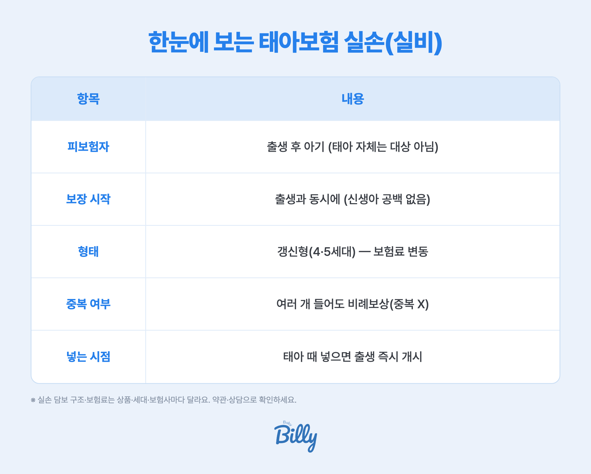

- 태아보험의 실손(실비)은 출생과 동시에 아기의 실손의료비를 보장해요 (태아 자체가 아니라 출생 후 아기 대상)
- 태아 때 넣으면 신생아 시기부터 공백 없이 보장 — 다만 실손은 갱신형이라 보험료가 오를 수 있어요
- 실손은 여러 개 들어도 중복 보상 안 돼요 — 하나면 충분해요
태아보험 '실손(실비)'이 뭔가요?
실손의료비(실비)는 병원에서 실제 부담한 의료비(입원·통원 등)를 보장해주는 보험이에요. 태아보험에 실손을 넣는다는 건, 아기가 태어나는 순간부터 이 실손 보장이 시작되게 미리 준비해두는 거예요.
중요한 점 — 실손의 피보험자는 태아 자체가 아니라 출생 후 '아기'예요. 태아 때 가입하는 이유는, 출생 직후 신생아 시기의 의료비 공백을 없애기 위해서예요.
한눈에 보는 태아보험 실손 핵심

| 항목 | 내용 |
|---|---|
| 피보험자 | 출생 후 아기 (태아 자체는 대상 아님) |
| 보장 시작 | 출생과 동시에 (신생아 시기 공백 없음) |
| 형태 | 갱신형(4·5세대) — 보험료가 오를 수 있음 |
| 중복 여부 | 여러 개 들어도 실제 낸 만큼만(비례보상) |
| 넣는 시점 | 태아 때 넣으면 출생 즉시 개시 |
실손, 꼭 넣어야 할까요?
실손은 나중에 아기 이름으로 따로 가입할 수도 있어요. 그런데도 태아 때 넣는 걸 고려하는 이유는 신생아 시기 때문이에요.
- 공백 없는 보장 — 신생아는 출생 직후 입원·검사가 생기기도 해요. 태아 때 실손을 넣어두면 그 시기부터 바로 보장돼요.
- 단, 무리는 금물 — 실손은 갱신형이라 시간이 지나며 보험료가 올라요. 진단비 같은 보장성은 길게, 실손은 필요에 맞게 — 예산 안에서 판단하는 게 좋아요.
- 중복은 불필요 — 실손은 하나만 있으면 돼요. 이미 다른 실손이 있다면 겹쳐 들 필요가 없어요.
더 자세히 — 관련 가이드
실손은 갈래가 많아, 상황별로 아래 가이드를 함께 보면 좋아요.
베이비빌리 태아보험 상담, 이래서 안심돼요
🛡️ 실손·진단비, 우리 아기에 맞게 무료로 설계 점검
실손을 넣을지, 어떤 담보를 우선할지는 상품마다 조건이 달라요. 200만 부모가 쓰는 베이비빌리가 여러 보험사를 한 번에 비교해, 우리 아기에게 필요한 만큼만 짚어드려요. 보험사 영업이 아니라 임신·육아 앱이 중립적으로 — 가입 강요는 없어요.
태아보험 무료로 비교·점검하기 →자주 묻는 질문
태아 자체가 아니라 출생 후 아기의 실손의료비(입원·통원 등 실제 부담한 의료비)를 보장해요. 태아 때 넣어두면 출생과 동시에 보장이 시작돼 신생아 시기 공백이 없어요.
실손은 나중에 따로 가입할 수도 있지만, 출생 직후 신생아 시기의 의료비 공백을 없애려면 태아 때 포함하는 게 유리해요. 다만 실손은 갱신형이라 보험료가 오를 수 있어, 예산과 함께 판단하세요.
아니요. 실손은 실제 부담한 의료비 한도 안에서 비례보상하므로 여러 개 들어도 중복해서 더 받지 못해요. 실손은 하나만 있으면 돼요.
기본 구조는 같은 실손의료비이지만, 태아보험에 넣는 실손은 출생 시점에 맞춰 개시된다는 점이 특징이에요. 자세한 차이는 태아 실손 vs 일반 실손 가이드를 참고하세요.
산모의 과거 실손 청구·병력은 고지 대상이 될 수 있고, 담보에 따라 심사에 영향을 줄 수 있어요. 자세한 내용은 임신 중 실손 청구, 태아보험 영향을 확인하세요.
함께 보면 좋은 가이드
참고 자료
※ 본 페이지는 금융감독원·손해보험협회 자료를 기반으로 정리한 일반 정보예요. 실손 담보 구조와 보험료는 상품·세대·보험사마다 다르니, 실제 가입 시 약관과 전문가 상담으로 확인하세요. 특정 상품을 권유하지 않습니다.